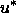
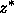
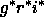

The final calibration pipeline works much like mtpipe, computing the transformation between aperture photometry (or other photometry) as observed by the 2.5m telescope and the final SDSS photometric system. The pipeline matches stars between a camera column of 2.5m data and an overlapping secondary patch. Each camera column of 2.5m data is calibrated individually. There are of order 100 stars in each patch in the appropriate color and magnitude range in the overlap. The locations of these secondary patches are indicated in Figure 8.
The transformation equations have the same form as those used by mtpipe, i.e., equation (15). Once again the b coefficient is set to 0. The extinction coefficient is taken from PT observations on the same night, linearly interpolated in time when multiple extinction determinations are available. Second order extinction corrections are included for completeness, but in practice do not affect the photometry by more than 0.01 mag. A single zeropoint a is computed from stars on all patches that overlap a given CCD in a given run. Observations are weighted by their estimated errors, and sigma-clipping is used to reject outliers. At one time it was thought that a time dependent zero point might be needed to account for the fact that the 2.5m camera and corrector lenses rotate relative to the telescope mirrors and optical structure; however, it now appears that any variations in throughput are small compared to inherent fluctuations in the calibration of the patches themselves. The statistical error in the zeropoint is constrained to be less than 1.35% in  and  and 0.9% in . However, systematic errors can be larger; we describe some of the tests of the consistency of our photometry in § 4.5.4.
One of the diagnostics of systematic problems is to plot residuals in the individual star observations as a function of magnitude or CCD column. Figure 10 shows an example, which indicates a problem with ghosting internal to the 2.5m telescope and system. This is most apparent in the u band, and is due to ghosting between the CCD and the u filter combined with vignetting of the out-of-focus ghost image. At the edge of the field of view, especially columns 1 and 6 of the 2.5m imaging camera, this effect gives rise to a CCD column dependent magnitude error of up to 10% in for a small range of CCD columns in the 2.5m imaging camera. The effect is present to a smaller degree (no more than 3%) in the other filters. The effect exists in the EDR in runs 752, 756, 1336, 1339, 1356 and 1359, and it will be addressed for future data releases.
For the first two runs included in the EDR (94 and 125) the full telescope baffling system was not in place. Stray light entering the telescope affected the median sky flatfields, causing systematic errors in the photometric calibration. We correct for this stray light in a two step process. First, these runs are processed assuming that there is no stray light. Significant photometric residuals from comparisons to our PT calibration patches (§ 4.5.2) are attributed to the presence of the stray light. The peak-to-peak variation of this effect is 10%. We calculate a correction vector to compensate for this, and apply it during a second processing of the runs. Once this is done, the data show no detectable residual effect from the scattered light.